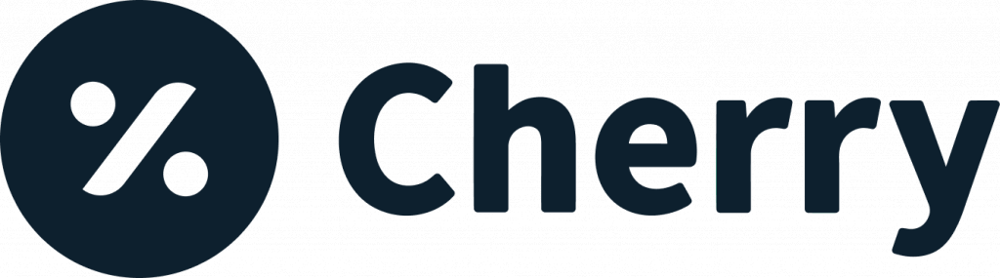
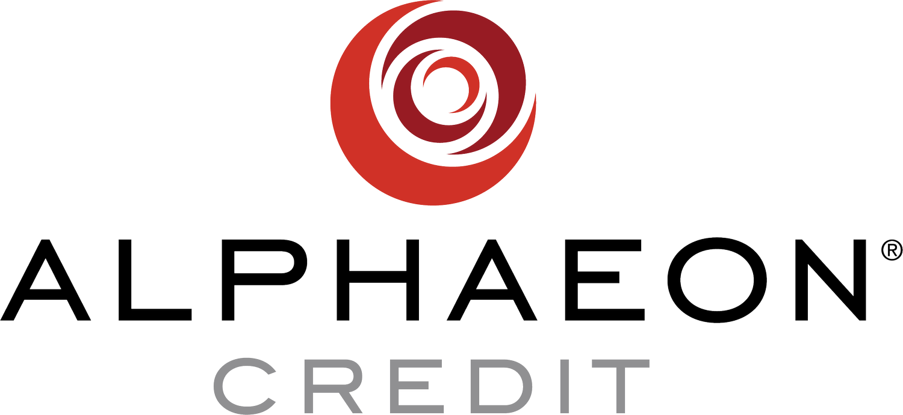

Wisdom Teeth Pain? Your Next Step Starts Here
Wisdom Teeth Removal. A Clear Plan for Relief.
Serving Manhasset, Long Island and Queens. Wisdom tooth pain, or referred by your dentist? Your exam includes a panoramic X-ray and a 3D CBCT scan, so we see every tooth, root and nerve before planning your removal. No referral needed.
1-Minute Check
Do Your Wisdom Teeth Need to Come Out?
Four quick taps. See what your symptoms can mean and what to do next.
Plan Around a School Break
Out Before Break. Back for Class.
Recover on days off, not during exams or practice.
Plan It Around Their Break.
Book the exam now. They recover at home on break, not school days.
Pick your break
- This weekExam and 3D scan
- Before breakPlan and exact price
- On breakRemoval and rest
In pain now? Don't wait for a break. Call (516) 500-7400.
Wisdom Tooth Pain? Get Answers. Find Relief.
Signs Your Wisdom Teeth Are a Problem
Pain behind the back molars, swollen gums, jaw stiffness, a bad taste that keeps coming back, food stuck behind the last tooth, or headaches near the jaw. Not sure which applies? Take the quick check.
Swelling that spreads to your face or neck, fever, or trouble swallowing needs to be checked right away.
Call us. If you have trouble breathing, go to the ER.
How It Works
A Clear Plan for Relief, From Exam to Follow-Up
Four steps. The plan is set at the exam, so the removal appointment is already mapped out when you arrive.
Exam with Panoramic X-Ray and 3D CBCT Scan
We look at all four teeth, their roots, and the nerve nearby. The scan is part of the exam visit.
Your Plan and Price
You see which teeth come out, why, and your exact price before anything is scheduled. 0% financing options are reviewed at the same visit.
Your Removal Appointment
The plan is already in place from your scan. You go home the same day with written instructions.
Follow-Up Check
We check that the sites are healing and answer anything that has come up since.
Before Your Visit
How Do I Prepare for Wisdom Teeth Removal?
A little setup the day before makes the first few days easier.
- 1You can drive yourself.We use local anesthesia only, so there is no sedation to wear off and no ride needed.
- 2Stock up on soft foods.Yogurt, applesauce, broth, and mashed potatoes. See the full list.
- 3Have ice packs ready.You will use them on and off for the first day or two.
- 4Stop smoking or vaping.At least 24 hours before, if you can. Here is why.
- 5Plan a quiet day or two.A school break or long weekend gives you time to rest.
- 6Bring your medication list.Include anything you take daily, plus vitamins and supplements.
Recovery
What the First Two Weeks Look Like
Drag through the days to see what to expect and what to do.
Typical pattern. Every recovery is different.
Rest, Ice, Soft Foods
Some swelling is normal.
- Gauze. Bite firmly on the gauze for about 90 minutes with steady pressure. Minor pink oozing is normal for the first day.
- No rinsing, spitting, straws, or smoking. Suction can pull the clot out and cause a dry socket.
- Ice. 20 minutes on, 10 minutes off, on the side of your face for the first day or two.
- Sleep with your head raised on two or three pillows. It cuts down on throbbing and swelling.
- Take it easy. No heavy lifting or hard exercise, and keep fingers and tongue away from the area.
- Wait until the numbness is gone before eating, usually one to two hours.
Swelling Peaks
Then it starts going down.
- Days 1 to 3: applesauce, yogurt, smoothies without a straw, broth or blended soup, mashed potatoes, scrambled eggs, oatmeal.
- Keep it lukewarm or cool. Heat disrupts healing. Chew on the other side of your mouth.
Back to School or Work
Most people are back to their normal routine.
- As you heal: soft pasta, shredded chicken, tuna or egg salad, tofu, protein shakes, ice cream without mix-ins.
- Skip for a week: chips, nuts, seeds, rice, popcorn, spicy or acidic foods, sticky candy, alcohol, and carbonated drinks.
Gums Keep Healing
Follow-up check if needed.
- You can go back to a normal diet as the sites close.
- We check that the sites are healing and answer anything that has come up since.
You leave with full written instructions. If you have heavy bleeding that does not stop, or swelling that keeps getting worse, call the office. Questions while you heal? Call us anytime, after hours too.
After Removal
What Can I Eat?
Keep food lukewarm or cool. Heat disrupts healing.
Dry Socket
What Is Dry Socket, and How Do I Avoid It?
Dry socket is when the blood clot that forms in the empty socket comes loose or dissolves too early, leaving the bone and nerve exposed. It is painful, and smoking is one of the biggest risks for it.
Smoking and Vaping
Sucking on a cigarette or vape can pull the clot out, and nicotine slows healing. The longer you can go without, the better.
- 24hrs beforeBefore your visitStop at least 24 hours before, if you can.
- 72hrs afterFirst 72 hoursNo smoking or vaping of any kind. This is when the clot is most fragile.
- 7days afterThrough week 1Waiting the full week gives the socket the best chance to heal.
Signs of Dry Socket
- Pain that gets worse two to four days after removal, instead of better.
- Pain that spreads to your ear, eye, or temple on the same side.
- A bad taste or smell from the socket.
- An empty-looking socket where you may see bone instead of a dark clot.
How to Prevent It
- No smoking or vaping for at least 72 hours.
- No straws for the first week.
- No spitting or hard rinsing for the first 24 hours. Let liquid fall out of your mouth.
- Skip alcohol and carbonated drinks for the first week.
- Follow your aftercare sheet, and keep your follow-up visit.
Think you have dry socket? It is treatable. Call us, after hours too, and we will see you. (516) 500-7400
Cost
What Affects the Cost
How many teeth come out, whether they have broken through the gum or are impacted, and how complex the removal is.
Your panoramic X-ray and 3D CBCT scan are included with your exam visit. You get your exact price before treatment. 0% financing available if you prequalify.
Financing if you prequalify
Financing partners we accept

Cherry'">
Alphaeon Credit'">Proceed Finance'">'">'">'">'">Wisdom Teeth FAQ
Questions People Ask Us
Do I need all four wisdom teeth removed?
Not everyone does. If a wisdom tooth has room, is fully through the gum, and you can keep it clean, it may be fine to leave. Your panoramic X-ray and 3D CBCT scan show which teeth are likely to cause trouble, and we go over each one with you.
Do my wisdom teeth need to come out if they do not hurt?
Not always. Some wisdom teeth never cause problems, but an impacted tooth can cause decay or gum trouble on the molar next to it without any pain. Your panoramic X-ray and 3D CBCT scan show whether each tooth is a risk, and we only recommend removing the ones that are.
Do I need a referral?
No. A referral helps but is not required. You can book an exam directly and we will take it from there.
What is a 3D CBCT scan?
A quick 3D X-ray showing each tooth, its roots, and the nerve nearby, so the removal is planned ahead. It takes under a minute and you stay seated the whole time.
Is the scan included?
Yes, with your exam visit. Both the panoramic X-ray and the 3D CBCT scan are part of the exam.
Does wisdom tooth removal hurt?
The area is fully numb during the removal, so you feel pressure but not pain. Most people describe the first two or three days afterward as sore and swollen, and over-the-counter pain relief usually handles it. We give you written instructions before you leave.
Can I drive myself home after wisdom teeth removal?
Yes. We use local anesthesia only, so there is no sedation to wear off and you do not need a ride.
What is dry socket?
Dry socket is when the blood clot in the empty socket comes loose or dissolves too early, leaving the bone exposed. The main sign is pain that gets worse two to four days after removal instead of better. It is treatable, so call us if you think you have it.
When can I smoke after wisdom teeth removal?
Wait at least 72 hours before smoking or vaping, and a full week if you can. Sucking on a cigarette or vape can pull out the blood clot and cause dry socket.
What are the types of impacted wisdom teeth?
There are six common types. Fully erupted teeth are through the gum and in line with your other teeth. Partially erupted teeth are only partly through the gum, and the gum flap over them can trap food and bacteria. A vertical impaction is upright but stuck under the gum or bone. A mesioangular impaction tilts forward into the molar next to it and is the most common type. A horizontal impaction lies on its side, pointed at the roots of the neighboring molar. A distoangular impaction tilts toward the back of the jaw. Each of your wisdom teeth can be a different type, and your panoramic X-ray and 3D CBCT scan show how each one sits.
How long is recovery?
Most people are back to school or work within a week. Swelling peaks around day three and then goes down. Gums keep healing for a few weeks after that.
Who do I call if I have a question during recovery?
Call us at (516) 500-7400. You can reach us after hours too, so you are never left guessing about bleeding, swelling, or pain.
What can I eat after?
Wait until the numbness wears off, then stick to soft, lukewarm or cool foods for the first few days: yogurt, applesauce, smoothies without a straw, mashed potatoes, scrambled eggs, blended soup. Avoid straws, crunchy foods, seeds, rice, popcorn, and spicy foods for about a week. You can go back to a normal diet as the sites close.
My wisdom tooth hurts right now. What should I do?
Book an exam and we will find the cause. In the meantime, rinse with warm salt water, keep the area clean, and take over-the-counter pain relief as directed. If swelling spreads to your face or neck or you have a fever, call us. If you have trouble breathing, go to the ER. For a same-day visit, see our urgent care page.
When is the best time to schedule?
When the teeth are flagged as a problem, sooner is usually easier, since the roots are shorter in younger patients. Students often plan removal for the start of winter or summer break. Those weeks fill up early, so book your exam ahead of time.
How much does it cost?
It depends on how many teeth come out, whether they are impacted or already through the gum, and how complex the removal is. Your panoramic X-ray and 3D CBCT scan are included with your exam visit. You get your exact price before any treatment is scheduled.
Do you offer financing?
Yes. 0% financing is available if you prequalify. We go over the options with you when we go over your price.
Where are you located?
444 Community Drive, Suite 309, Manhasset, NY 11030, off LIE Exit 33, with parking on site. Patients come to us from Great Neck, Port Washington, Roslyn, Garden City, Flushing, and Bayside.
No matching question. Call us at (516) 500-7400 and ask.
Wisdom Teeth Pain? Your Next Step Starts Here
Book Your Wisdom Teeth Exam
Panoramic X-ray and 3D CBCT scan included. Located in Manhasset and serving patients throughout Long Island and Queens.
Visit us
444 Community Drive, Suite 309Manhasset, NY 11030
Parking on site. Exit 33 off the Long Island Expressway.
Get Directions